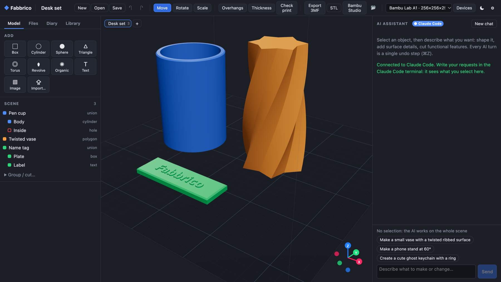

You lay out the shapes.
AI does the hard parts.
Fabbrico is an open-source 3D design tool for FDM printing. Build the basics by hand, then ask Claude for fillets, textures, organic forms and functional features, all checked for printability before they reach your slicer.
Fabbrico: Italian for “I make”.

How it works
Every change, including what the AI does, is an edit to a parametric scene, so everything stays editable and every AI turn is a single undo step.
Lay it out
Boxes, cylinders, text, holes and groups, with exact sizes in millimetres. Or trace the real object on an iPad with the Apple Pencil.
Ask
“Round the edges by 2 mm and add a knurled grip.” Claude sees your selection and your view, edits the model, renders it and checks its own work.
Overhang and wall-thickness maps, orient for print, then export 3MF or send the plate straight to Bambu Studio, OrcaSlicer or PrusaSlicer.
What's inside
An early prototype, already useful for real parts.
Precise and organic
Primitives, extrusions, revolves, text, imported meshes and smooth SDF shapes in one scene.
Surface modifiers
True fillets, chamfers, support-free teardrop holes, knurl, ribs, waves, twist, taper and bend.
Always watertight
Booleans by the Manifold kernel, built in the background so the interface never freezes.
Tablet and phone
Trace objects, draw dimensioned sketches, add reference photos and notes, preview the plate in AR at real size.
Images
Turn pictures into reliefs, lithophanes or logos to emboss or engrave.
Learns from your prints
A diary of print attempts and a library of experiences (fits, tolerances) that the AI reuses next time.
Two ways to bring the AI
Fabbrico has no server and no account. The AI is Claude, by Anthropic.
Claude Code
Use your Claude
Pro or Max subscription. Fabbrico includes an MCP bridge: run claude in the
project folder and talk to it in the terminal while you watch the model change.
In-app chat
Paste an Anthropic API key in Settings. It stays in your browser and is sent only to Anthropic.
Get started
Runs on your computer, from source. A desktop app for macOS is on the way.
- Install Node.js 20 or newer.
- Download the latest release
(or clone the repository), then start it from its folder:
It installs what it needs and opens./start.shhttp://localhost:5173in your browser. On Windows, runnpm installand thennpm run devinstead. - For the AI, run
claudein the same folder (Claude Code), or add an API key in ⚙ Settings.
Works best in Chrome or Edge. Projects and settings stay on your computer.